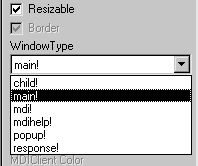

This section describes how to build windows from scratch. You use this technique to create windows that are not based on existing windows.
 To create a new window:
To create a new window:
Open the New dialog box.
On the PB Object tab page, select Window.
Click OK.
The Window painter opens. The new window displays in the Window painter's Layout view and its default properties display in the Properties view.
Every window and control has a style that determines how it appears to the user. You define a window's style by choosing settings in the Window painter's Properties view. A window's style encompasses its:
 About defining a window's style When you define a window's style in the Window painter,
you are actually assigning values to the properties for the window.
You can programmatically change a window's style during
execution by setting its properties in scripts. For a complete list
of window properties, see Objects and Controls
.
About defining a window's style When you define a window's style in the Window painter,
you are actually assigning values to the properties for the window.
You can programmatically change a window's style during
execution by setting its properties in scripts. For a complete list
of window properties, see Objects and Controls
.
 To specify window properties:
To specify window properties:
Click the window's background to display the window's properties in the Properties view.
 Another way to display window properties You can also select the window name in the Control List view.
Another way to display window properties You can also select the window name in the Control List view.
Choose the tab appropriate to the property you want to specify:
Use the General property page to specify the following window information:
The first thing you should do is specify the type of window you are creating.
 To specify the window's type:
To specify the window's type:
In the Properties view for the window, select the General tab.
Scroll down the property page and select the appropriate window type from the WindowType drop-down list.

Depending on the type of window, PowerBuilder enables or disables certain check boxes that specify other properties of the window. For example, if you are creating a main window, the Title Bar check box is disabled. Main windows always have title bars, so you cannot clear the Title Bar check box.
By selecting and clearing check boxes on the General property page, you can specify whether the window is resizable or minimizable, is enabled, has a border, and so on.
Note the following:
Many of your windows will have a menu associated with them.
 To associate a menu with the window:
To associate a menu with the window:
Click the Preview button in the PainterBar to see the menu.
For information about preview, see "Viewing your work ".
 Changing the menu You can change a menu associated with a window during execution
using the ChangeMenu function. For more information,
see the PowerScript Reference
.
Changing the menu You can change a menu associated with a window during execution
using the ChangeMenu function. For more information,
see the PowerScript Reference
.
You can change the background color of your window.
 To specify the color of a window:
To specify the color of a window:
For main, child, pop-up, and response windows, the default color is ButtonFace if you are defining a 3D window, and white if you are not. If you or the user specified different display colors in the Windows Control Panel, a 3D window will display in the color that is set for the window background.
You can change the default for windows that are not 3D in the Application painter Properties view. To do so, click the Additional Properties button on the General page and modify the Background color on the Text Font tab page. New windows that are not 3D will have the new color you specified.
For more about using colors in windows, including how to define your own custom colors, see Chapter 12, "Working with Controls ."
If the window can be minimized, you can specify an icon to represent the minimized window. If you do not choose an icon, PowerBuilder uses the application icon for the minimized window.
 To choose the window icon:
To choose the window icon:
Click the window's background so the Properties view displays window properties.
Select the General tab.
Choose the icon from the Icon drop-down list or use the Browse (...) button to select an icon (.ICO) file.
The icon you chose displays in the Icon list.
 Changing the icon during execution You can change the window icon during execution by assigning
in code the name of the icon file to the window's Icon
property, window.Icon.
Changing the icon during execution You can change the window icon during execution by assigning
in code the name of the icon file to the window's Icon
property, window.Icon.
 To resize a window in the Layout view:
To resize a window in the Layout view:
Drag the edge of the window in the Window painter's Layout view.
Resizing a window is easiest using the Layout view, but you can also change the window's width and height properties in the Properties view.
 To specify a window's position and size:
To specify a window's position and size:
Click the window's background so the Properties view displays window properties.
Select the Other tab.
Enter values for x and y locations in PowerBuilder units.
 About x and y values For main, pop-up, response, and MDI frame windows, x and y
locations are relative to the upper-left corner of the screen. For
child windows, x and y are relative to the parent.
About x and y values For main, pop-up, response, and MDI frame windows, x and y
locations are relative to the upper-left corner of the screen. For
child windows, x and y are relative to the parent.
Enter values for width and height in PowerBuilder units.
The size of the window changes in the Layout view.
To see the position of the window, click the Preview button in the PainterBar (not the Preview button on the PowerBar).
To return to PowerBuilder, close the window.
For information about preview, see "Viewing your work ".
All window measurements are in PowerBuilder units (PBUs). Using these units, you can build applications that look similar on different resolution screens. A PBU is defined in terms of logical inches. The size of a logical inch is defined by your operating system as a specific number of pixels. The number is dependent on the display device. Windows typically uses 96 pixels per logical inch for small fonts and 120 pixels per logical inch for large fonts.
Almost all sizes in the Window painter and in scripts are expressed as PowerBuilder units. The two exceptions are text size, which is expressed in points, and grid size in the Window and DataWindow painters, which is in pixels.
For more about PowerBuilder units, see the PowerScript Reference .
The default pointer used when the mouse is over a window is an arrow. You can change this default on the Other page in the properties view.
 To choose the window pointer:
To choose the window pointer:
Click the window's background so the Properties view displays window properties.
Select the Other tab.
At the bottom of the property page, choose the pointer from the Pointer drop-down list or use the Browse (...) button to select a cursor (.CUR) file.
 Specifying the pointer for a control You can specify the pointer that displays when the mouse is
over an individual control. Select the control to display the Properties
view for the control, then specify the Pointer property on the Other
page.
Specifying the pointer for a control You can specify the pointer that displays when the mouse is
over an individual control. Select the control to display the Properties
view for the control, then specify the Pointer property on the Other
page.
If your window is resizable, it is possible that not all the window's contents will be visible during execution. In such cases, you should make the window scrollable by providing vertical and horizontal scroll bars. You do this on the Scroll property page.
By default, PowerBuilder controls scrolling when scroll bars are present. You can control the amount of scrolling.
 To specify window scrolling:
To specify window scrolling:
Click the window's background so the Properties view displays window properties.
Select the Scroll tab.
Indicate which scroll bars you want to display by selecting the HScrollBar and VScrollBar check boxes.
Specify scrolling characteristics as follows:
You can specify whether or not you want to display a menu toolbar (if the menu you associate with your window assigns toolbar buttons to menu objects) in your window. If you choose to display the toolbar, you can specify the location for it.
 To specify toolbar properties:
To specify toolbar properties:
Click the window's background so the Properties view displays window properties.
Select the Toolbar tab.
To display the toolbar with your window, select the ToolbarVisible check box.
Set the location of the toolbar by selecting an alignment option from the ToolbarAlignment drop-down list.
If you choose Float as your toolbar alignment, you must set the following values:
For more information about defining toolbars, see Chapter 14, "Working with Menus and Toolbars."
When you build a window, you place controls, such as CheckBox, CommandButton, and MultiLineEdit controls, in the window to request and receive information from the user and to present information to the user.
After you place a control in the window, you can define its style, move and resize it, and write scripts to determine how the control responds to events.
For more information, see Chapter 12, "Working with Controls ."
You can automatically create nonvisual objects in a window by inserting a nonvisual object in the window. You do this if you want the services of a nonvisual object available to your window. The nonvisual object you insert can be a custom class or standard class user object.
You insert a nonvisual object in a window in the same way you insert one in a user object. For more information, see "Using class user objects".
You can save the window you are working on at any time.
 To save a window:
To save a window:
Select File>Save from the menu bar.
If you have previously saved the window, PowerBuilder saves the new version in the same library and returns you to the Window painter workspace.
If you have not previously saved the window, PowerBuilder displays the Save Window dialog box.
Name the window in the Windows text box (see below).
Type comments in the Comments text box to describe the window.
These comments display in the Select Window window and in the Library painter. It is a good idea to use comments so you and others can easily remember the purpose of the window later.
Specify the library where you want to save the window.
Click OK.
The window name can be any valid PowerBuilder identifier of up to 40 characters. For information about PowerBuilder identifiers, see the PowerScript Reference .
A commonly used convention is to preface all window names with w_ and use a suffix that helps you identify the particular window. For example, you might name a window that displays employee data w_empdata.